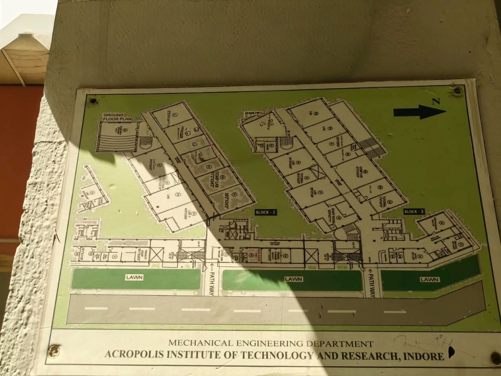

Ground Floor Architectural CAD Plan & 360° POV Virtual Campus Walk
Official spatial navigation portal for the Department of Mechanical Engineering at Acropolis Institute of Technology and Research (AITR), Indore. Experience a dual-mode interactive digital twin: inspect our millimeter-precise 2D Architectural Floor Plan covering Blocks 1, 2, and 3, or walk step-by-step through 40 high-resolution street-view vantage points from the Security Gate to research laboratories and the Sports Complex.
Integrated Digital Campus Twin
Precision architectural vector blueprints combined with immersive first-person photographic walkthroughs
Architectural 2D Floor Plan
Faithfully drafted from the official Department Ground Floor blueprint. Inspect Blocks 1, 2, and 3 with room dimensions, in-charge faculty, seating capacity, equipment catalogs, live search, and a toggleable CAD blueprint mode.
View Floor Plan & Drawing Sheet ➜360° POV Virtual Street Walk
Walk step-by-step from the campus Security Gate through the Royal Palm Avenue, Block 1 Forecourt, Block 2 Facade, Block 3 Interior, and Canteen Food Truck Plaza with directional floating arrows and automatic pathfinding.
Start Walking Campus ➜Industry Centers of Excellence
Direct access to world-class industry labs: IBM Software CoE (Cloud & AI), SKF CoE Room 23 (Condition Monitoring & Bearing Tribology), and AICTE IDEA Lab (3D Prototyping & Prototyping).
Explore CoE Equipment ➜Architectural 2D Floor Plan (Ground Floor)
Interactive vector CAD blueprint of Block 1, Block 2, Block 3, Palm Avenue & Sports Complex · Click any space to inspect details
Department Facilities & Laboratories Directory
Comprehensive roster of academic laboratories, research centers, classrooms, and administrative offices

📷 Mounted Department Wall BlueprintDrawn Directly From Official Floor Plan
The interactive 2D digital twin above was drafted based directly on this official Ground Floor Plan mounted at the Department of Mechanical Engineering entrance lobby at Acropolis Institute of Technology and Research (AITR), Indore.
- North Orientation: Oriented with North pointing to the right, matching the blueprint's original arrow marker.
- Front Corridor & Lawns: Reflects the three manicured lawns, two pedestrian access pathways, and main access road.
- 3 Academic Wings: Captures Block 1 (Auditorium & Workshop), Block 2 (IBM, SKF & AICTE Labs), and Block 3 (Core Mechanical & Automotive Labs).
- Exact Dimensions: Preserves all architectural room dimensions (e.g. 61'2" × 34'2", 26'10" × 34'0", 41'10" × 39'6").
Department Helpdesk & Key Contacts
Reach out to the Mechanical Engineering Department or visit our campus in Indore
Department Office
Academic Affairs & Lab Stores
Phone: 0731-4730000 (Ext. 204)
Admissions Cell
B.Tech Mechanical Engineering (2026-27)
Helpline: +91 97524 10845 / 46
Campus Location
Security Gate & Reception
Bypass Road, Manglia, Indore (M.P.) 453771
Mon – Sat: 9:00 AM – 5:00 PM